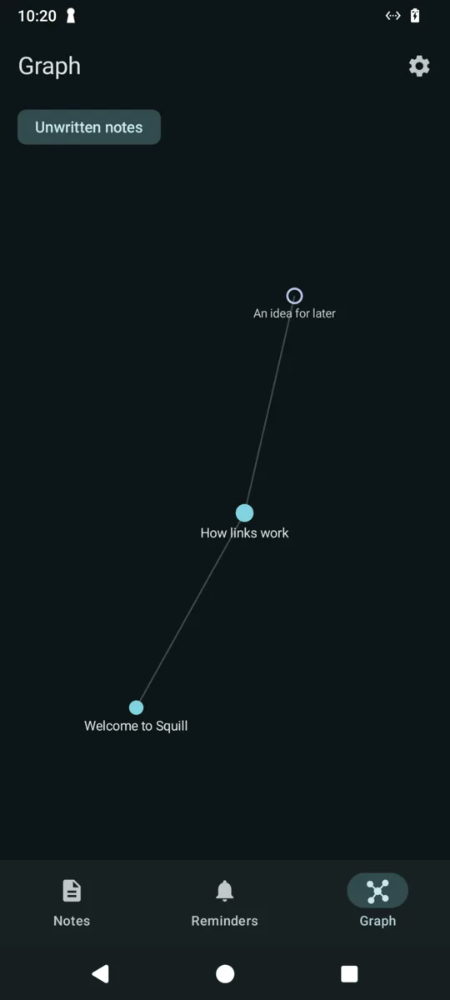
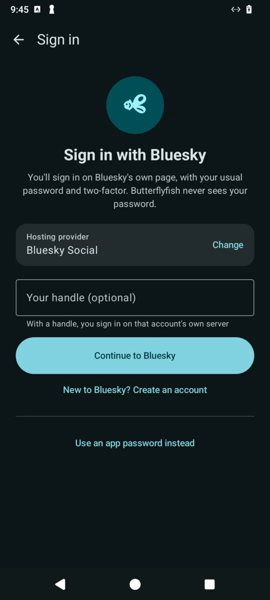

Write it down. Link it up. Consider it remembered.
Squill / Notes, art, documents and slides
Your thoughts, joined up, in files that are yours.
Notes in folders, written in Markdown, with links, backlinks and a graph. Sketch with low-latency ink, paint with layers, blend modes and 19 brushes, and edit slides right on your phone. Open and save Word and PowerPoint files, and keep reminders that ring at the exact minute.
Your notes, with tags and checklistsTick boxes, links and tables

The graph of how it all joins up
02 / Angelfish
Room to watch. Room to breathe.
Less noise. More play.
Your videos, with the controls you’d choose.
YouTube with SponsorBlock, DeArrow, Return YouTube Dislike, background play and picture-in-picture built in. Choose available audio tracks, captions and quality, with chapter names as you scrub. Phones, tablets, Chromebooks and TVs.
Angelfish: chapters, SponsorBlock segments and dislikes
A small app. A long list of possibilities.
Features depend on each service and the streams it makes available. Shoal does not promise complete YouTube feature parity or access to paid content.
Material You everywhereThe app, its icon and its launch screen follow your wallpaper, in light and dark.
No ads, no trackingNo account needed. Nothing is sent anywhere except the services listed below.
SponsorBlock and DeArrowSkip sponsor segments and swap clickbait titles and thumbnails for community ones.
Background and picture-in-pictureKeep listening with the screen off, or keep watching in a floating window.
Shorts, your wayYouTube, TikTok or Reels layouts, daily limits, or turn them off completely.
Learning feedSwap recommendations for science, maths, history and more.
Phones, tablets, ChromebooksGrid feeds and a two-pane watch page on big screens.
TV modeYouTube's TV interface for big screens, with ad blocking and SponsorBlock from VacuumTube. Remote, touch or any Bluetooth controller.
Queues and playlistsLine up what plays next, keep named playlists on your phone with no account, and save just the audio of a video.
Optional sign-inBring your subscriptions, likes, history and Watch later across from your account.
03 / Butterflyfish

Butterflyfish: sign in on Bluesky's own page
Follow people. Find your own flow.
Bluesky laid out like Bluesky: your pinned feeds, threads, verification badges, Profile Links, posting with pictures and profile editing. Sign in on Bluesky's own page, no app password needed. X has its own tab.
Each service has its own tab. Where a service’s website is used, its pages and rules still apply.
Built with Jetpack Compose and Material 3 Expressive. Free software under the GPL.
↓
Our current
Apps should feel like a natural habitat.
Less hassle. More of what you love.
Sometimes watching a video feels like an obstacle course: an advert, a sponsorship, another prompt to upgrade. Downloads sit behind a subscription, and the interface can feel generic, cluttered and tired.
We wanted a fresh current. So we dipped our hands into the water of app development.
Shoal puts the experience first: a unified Material You design, colours that adapt to your phone, and controls that feel familiar from one app to the next.
Your content shouldn't need a costume change.
Big companies use different designs to distinguish their brands. But when you're just catching up with people, why should every service feel like a completely different world?
One friend posts on Bluesky, another on X. Butterflyfish brings both into one app, each in its own tab, with a familiar home around them.
Not every service can share the same native interface. Where an app uses a service's website, its pages and rules still apply. We're building a shared home, not pretending those differences have disappeared.
Why fish?
Fish are free to swim through a vast ocean. They adapt to their surroundings and thrive in a natural habitat. That's the spirit behind Shoal: simple, adaptable apps that give you room to enjoy what you came for.
We believe you should have a choice beyond the primary apps made by monopolies and big companies. Shoal doesn't add advertising profiles or sell your personal information. The services you connect to keep their own privacy policies.
Free to swim. Free to stay.
No Shoal feature paywalls. No subscription to unlock our controls. Payment is optional, and donations help keep the project moving. A thank-you should never decide what you're allowed to do.
Third-party services may still require an account, impose restrictions or charge for their own content. Shoal's features remain free.
Installs and updates every app in the shoal, silently with Shevery, Shizuku or root, and only ever installs apps signed by Shoal. Sign in to your accounts once here and the apps use them.
Optional: you can also download each app directly from this page.
Shoal: installs the apps and keeps them up to date
05 / Out of the current
Archived for now.
These aren't good enough yet, so they're set aside for the moment and Shoal no longer lists them. You can still download them here, but expect things not to work.
Clownfish
YouTube Shorts, TikTok and Instagram Reels in one app, each in its own tab and signed in with your own accounts, without the sites' get-the-app nags.
YouTube Music laid out like Spotify: Home mixes, your library and playlists, offline downloads, lyrics when available, a sleep timer, and the whole app coloured from the album art.
Shoal apps are free software under the GNU General Public License, version 3 or later. You can use, study, share and change them. Anything you distribute that is built from them must stay under the same licence, with its source code available. They come with no warranty.
Privacy
Shoal has no servers of its own, no ads and no tracking. Your settings, history and subscriptions stay on your phone. If you agree, the apps send anonymous error reports so bugs can be fixed; it's off unless you say yes. Read the full privacy policy.
To work, the apps talk directly to the services they show. Angelfish contacts YouTube, and, only while those features are turned on, sends the ID of the video you're watching to SponsorBlock, DeArrow and Return YouTube Dislike. If you sign in, your YouTube cookies are stored only on your phone and sent only to YouTube. Once a day the app asks GitHub whether a newer version has been released; you can turn that off in Settings. With Shoal installed, it does this instead: it contacts GitHub to check for and download Shoal releases, and the sign-in pages of any services you choose to sign in to.
Not affiliated
Shoal is an independent project. It is not affiliated with, endorsed by or sponsored by Google, YouTube, TikTok, Instagram, Meta, X, Bluesky, Reddit or any other company whose service an app connects to. All trademarks belong to their owners and are used only to describe what the apps work with.